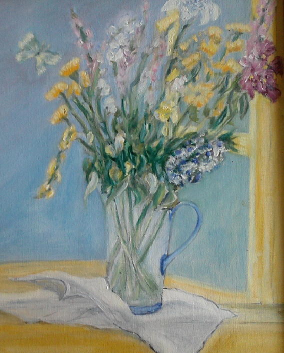

;
Bio
Since she was a child, Adriana Dilanian had a passion for the arts. She began her artistic education at the Beaux-Arts University. Thence she continued her education in various Art schools in Los Angeles. In the past she had multiple art exhibits in Paris, at the Basilica of Madeleine and at the Gallery Art Nouveau. She is also a college level French instructor, and obtained a Master’s Degree in French Literature from the Sorbonne University in 2004. Currently located in Southern California, Adriana plans to continue her artistic endeavours by hosting local exhibits and teaching.
Contact